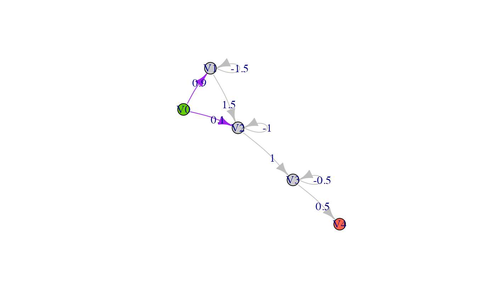
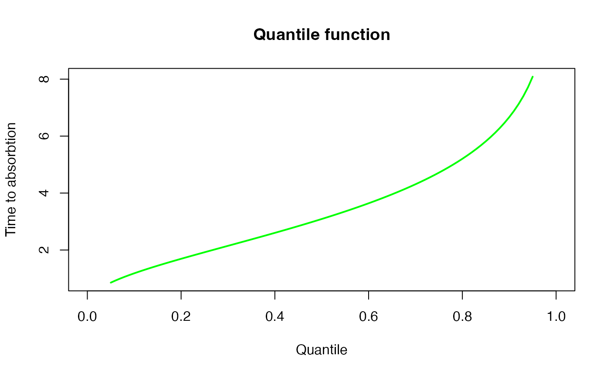
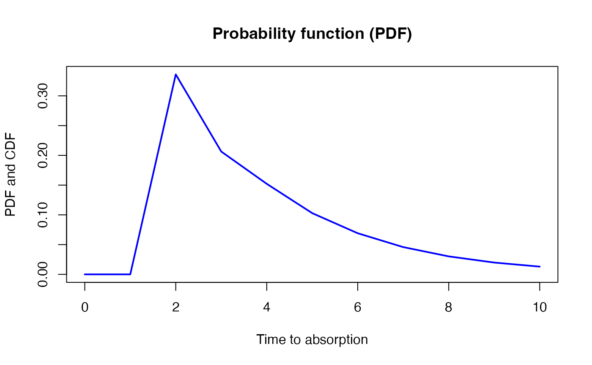
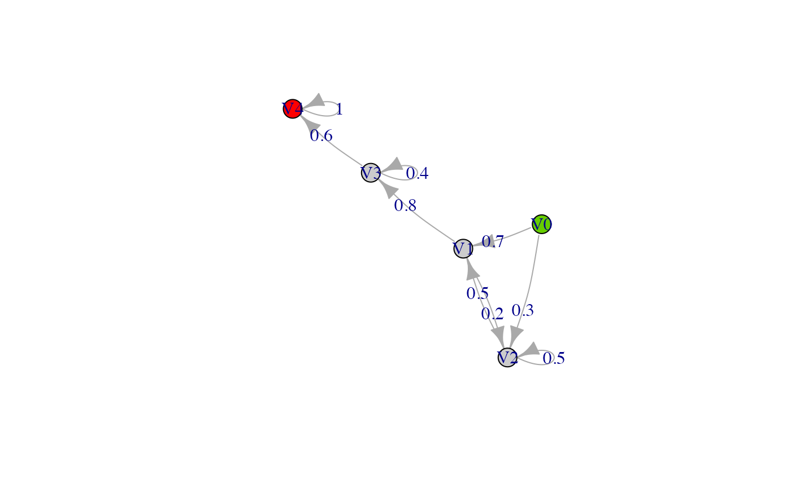
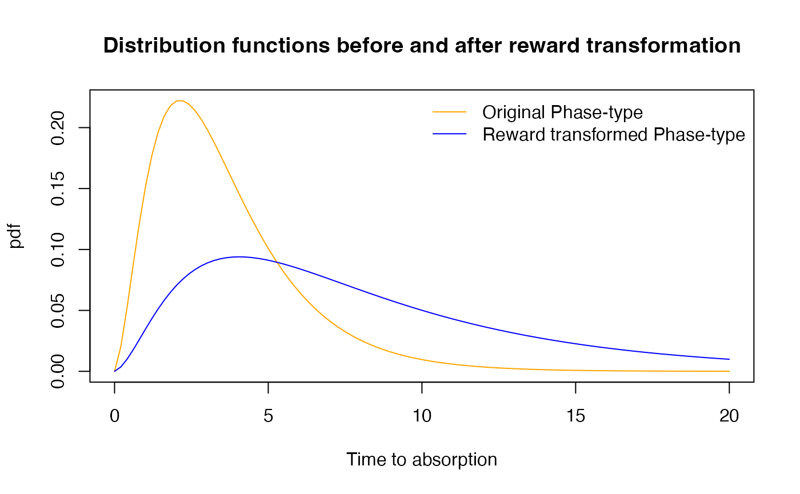

Preface
Please report any issues on the git page of the package.
Most background and details can be found in the book by Mogens Bladt and Bo Friis Nielsen (2017): Matrix-Exponential Distributions in Applied Probability, and the PhD dissertation by Campillo Navarro (2019).
1. Introduction
Phase-type distributions are a general class of distributions. They have been used extensively in fields like insurance mathematics, queuing theory and population genetics.
The basic idea is to consider a Markov jump process (or a Markov chain for discrete time) with \(p\) transient states and one absorbing state. The time to absorption is phase-type distributed. The parameters of a phase-type distribution is thus an intensity matrix and the initial probabilities to begin in each state. The matrix form of the phase-type distribution allow great simplification, in particular to find the moments of the time before reaching the absorbing state.
The package PhaseTypeR handle and manipulate the continuous and discrete phase-type distributions, and their corresponding reward transformations and multivariate extensions.
The package is general, but our initial interest in phase-type distributions is from applications in population genetics. We provide a separate vignette where we further demonstrate PhaseTypeR using applications from population genetics.
2. The phase-type objects
The functions provided by PhaseTypeR require objects of class disc_phase_type, cont_phase_type, mult_disc_phase_type or mult_cont_phase_type, which can be obtained using the generator functions PH(), DPH(), MPH() and MDPH(), respectively.
Here is an example of a univariate continuous phase-type distribution:
subintensity_matrix <- matrix(c(-1.5, 0, 0,
1.5, -1, 0,
0, 1, -0.5), ncol = 3)
initial_probabilities <- c(0.9, 0.1, 0)
ph <- PH(subintensity_matrix, initial_probabilities)
ph
#> $subint_mat
#> [,1] [,2] [,3]
#> [1,] -1.5 1.5 0.0
#> [2,] 0.0 -1.0 1.0
#> [3,] 0.0 0.0 -0.5
#>
#> $init_probs
#> [,1] [,2] [,3]
#> [1,] 0.9 0.1 0
#>
#> $defect
#> [1] 0
#>
#> attr(,"class")
#> [1] "cont_phase_type"Here subint_mat is the sub-intensity matrix and init_probs is the vector of initial probabilities.
An object of one of the phase-type classes always has a sub-intensity matrix, an initial probability vector, a defect (the probability of starting directly in the absorbing state, which can happen when using reward transformations (see Section~4)), and the type of class.
We can also print a summary of the object:
summary(ph)
#>
#> Subintensity matrix:
#> [,1] [,2] [,3]
#> [1,] -1.5 1.5 0.0
#> [2,] 0.0 -1.0 1.0
#> [3,] 0.0 0.0 -0.5
#>
#> Initial probabilities:
#> [,1] [,2] [,3]
#> [1,] 0.9 0.1 0
#>
#> Defect:
#> [1] 0
#>
#> Mean: 3.6
#>
#> Variance: 5.44The init_probs argument is optional. If not provided, the probability beginning in the first state will be set to 1, that is, \(\boldsymbol{\pi} = (1,\, 0,\, 0,\, ...\,,0)\). In this case the generator function will print a warning:
subintensity_matrix <- matrix(c(-1.5, 0, 0,
1.5, -1, 0,
0, 1, -0.5), ncol = 3)
PH(subintensity_matrix)
#> Warning in check_phase_type(subint_mat, init_probs):
#> The initial probability vector is automatically generated.
#> $subint_mat
#> [,1] [,2] [,3]
#> [1,] -1.5 1.5 0.0
#> [2,] 0.0 -1.0 1.0
#> [3,] 0.0 0.0 -0.5
#>
#> $init_probs
#> [,1] [,2] [,3]
#> [1,] 1 0 0
#>
#> $defect
#> [1] 0
#>
#> attr(,"class")
#> [1] "cont_phase_type"This is the reason we take the subintensity matrix as the first entry in the function.
3. Univariate phase-type distributions
3.1. The continuous univariate phase-type
Let \(\{X_t\}_{t\ge0}\) be a Markov jump process with \(p\) transient states and one absorbing state. If \(\tau\) is defined as the time when \(\{X_t\}_{t\ge0}\) reaches the absorbing state, then \(\tau\) follows a continuous phase-type distribution \(\tau \sim PH(, \boldsymbol{\pi},\boldsymbol{T})\), where \(\boldsymbol{T}\) is the sub-intensity matrix of the corresponding Markov jump process, and \(\boldsymbol{\pi}\) is the vector of initial probabilities.
As specified before, a continuous phase-type distribution object can be created in PhaseTypeR using the PH() function:
subintensity_matrix <- matrix(c(-1.5, 0, 0,
1.5, -1, 0,
0, 1, -0.5), ncol = 3)
initial_probabilities <- c(0.9, 0.1, 0)
ph <- PH(subintensity_matrix, initial_probabilities)
ph
#> $subint_mat
#> [,1] [,2] [,3]
#> [1,] -1.5 1.5 0.0
#> [2,] 0.0 -1.0 1.0
#> [3,] 0.0 0.0 -0.5
#>
#> $init_probs
#> [,1] [,2] [,3]
#> [1,] 0.9 0.1 0
#>
#> $defect
#> [1] 0
#>
#> attr(,"class")
#> [1] "cont_phase_type"We can easily plot the phase-type distribution as a network by first converting the phase-type object into a graph, and then plotting it:
net <- phase_type_to_network(ph)
plot(net, edge.curved=.1, edge.label = E(net)$weight,
edge.color = ifelse(as_data_frame(net, what="edges")$from == 'V0',
'purple', 'grey'))
In the above graph the initial probabilities are represented as purple arrows, while rates are represented by gray arrows.
In the continuous case, we can also plot the transition probability matrix at time t as a graph:
par(mfrow=c(2,3), mar=c(2,2,2,2))
for (i in c(0, 1, 3, 5, 10, 20)) {
net <- phase_type_to_network(ph, i)
plot(net, edge.arrow.size=0.5, edge.curved=.1, edge.label = E(net)$weight, main=paste0('time = ', i),
edge.color = ifelse(as_data_frame(net, what="edges")$from == 'V0',
'purple', 'grey'))
}
The mean of a continuous phase-type distribution is provided in Theorem 3.1.16 and Corollary 3.1.18 in (Bladt and Nielsen 2017, 81:p.135)
\[ \mathbb{E} (\tau) = \boldsymbol{\pi} (-\boldsymbol{T})^{-1} \boldsymbol{e}, \] and from Corollary 3.1.18 (Bladt and Nielsen 2017, 81:p.135), the higher order moments are given by
\[ \mathbb{E} (\tau^n) = n!\boldsymbol{\pi} (-\boldsymbol{T})^{-n} \boldsymbol{e}, \quad n=1,2,\ldots. \]
From this formula we find the variance
\[ \mathbb{V} (\tau) = \mathbb{E} (\tau^2)-\mathbb{E} (\tau)^2= (2\boldsymbol{\pi} (-\boldsymbol{T})^{-2} \boldsymbol{e}) -(\boldsymbol{\pi} (-\boldsymbol{T})^{-1} \boldsymbol{e})^2. \]
Calculating the mean and variance of a phase-type distributed random variable is straightforward in PhaseTypeR. We can do so by using the generic functions mean() and var() on a cont_phase_type object. For example:
cat('\n', 'Mean: ',mean(ph),'\n')
#>
#> Mean: 3.6
cat(' Variance: ',var(ph),'\n \n')
#> Variance: 5.44
#> These two quantities are also printed when using the summary() function:
summary(ph)
#>
#> Subintensity matrix:
#> [,1] [,2] [,3]
#> [1,] -1.5 1.5 0.0
#> [2,] 0.0 -1.0 1.0
#> [3,] 0.0 0.0 -0.5
#>
#> Initial probabilities:
#> [,1] [,2] [,3]
#> [1,] 0.9 0.1 0
#>
#> Defect:
#> [1] 0
#>
#> Mean: 3.6
#>
#> Variance: 5.44The probability density function (PDF) of a continuous phase-type distribution is provided in Theorem 3.1.7 (Bladt and Nielsen 2017, 81:p.~131)
\[ f(u) = \boldsymbol{\pi}e^{\boldsymbol{T}u}\boldsymbol{t}, \quad u\ge0, \] where \(\boldsymbol{t} = -\boldsymbol{T}\boldsymbol{e}\) is the exit rate vector of the sub-intensity matrix (the vector of rates from state \(i\) to the absorbing state). The cumulative distribution function (CDF) is
\[ F(u) = 1-\boldsymbol{\pi}e^{\boldsymbol{T}u}\boldsymbol{e}, \quad u\ge0. \]
We calculate the PDF and the CDF with dPH() and pPH(), respectively,
x <- seq(0,8,length.out = 100)
pdf <- dPH(x, ph)
{plot(x, pdf, xlab = "Time to absorption", ylab = "PDF", col = "blue",
type = 'l', lwd=2)
title('Probability density function (PDF)')}
x <- seq(0,8,length.out = 100)
cdf <- pPH(x, ph)
{plot(x, cdf, xlab = "Time to absorption", ylab = "CDF", col = "orange",
type = 'l', lwd=2)
title('Cumulative density function (CDF)')
}Additionally, we can compute the quantile function using qPH():
x <- seq(0.05, 0.95, 0.01)
{plot(x, qPH(x, ph), col = "green", type="l", lwd=2, xlim=c(0,1),
ylab = "Time to absorbtion", xlab = "Quantile")
title('Quantile function')}
We can also make random draws from the phase-type distribution using rPH():
cat('10 random samples: \n', rPH(5, ph), '\n', rPH(5, ph))
#> 10 random samples:
#> 0.8861636 6.76299 2.622156 2.379226 1.054463
#> 0.9183744 1.583746 6.672854 1.504638 0.9041597Here is a histogram of 200 samples from the phase-type distribution:

set.seed(6)
tab_FullPH <- rFullPH(ph)
x <- c(tab_FullPH$time, sum(tab_FullPH$time)/length(tab_FullPH$time))
x <- cumsum(x)
y <- c(tab_FullPH$state, 4)
plot(x,y,type="n", xlim=c(0,x[length(x)]))
segments(c(0,x[-length(x)]),y,x,y)
points(c(0,x[-length(x)]),y,pch=16)
points(x[-length(x)],y[-length(x)],pch=1)
points(x[length(x)],y[length(x)],pch='>')
3.2. The discrete univariate phase-type
Instead of using a Markov Jump Process (also sometimes called a continuous time Markov chain), it is also possible to consider a discrete Markov chain (MC). Let’s consider \(\tau \sim DPH(\boldsymbol{\pi},\boldsymbol{T})\). Here \(\tau\) is the number of state transitions before entering the absorbing state. The sub-intensity matrix \(\boldsymbol{T}\) contains the probabilities of jumping from one state to another.
Discrete phase-type distributions can be created in PhaseTypeR using the DPH() function by specifying a sub-intensity matrix that meets the requirements for a discrete phase-type distribution:
subintensity_matrix <- matrix(c(0, 0.2, 0.8,
0.5, 0.5, 0,
0, 0, 0.4), ncol = 3, byrow = T)
initial_probabilities <- c(0.7, 0.3, 0)
dph <- DPH(subintensity_matrix, initial_probabilities)
dph
#> $subint_mat
#> [,1] [,2] [,3]
#> [1,] 0.0 0.2 0.8
#> [2,] 0.5 0.5 0.0
#> [3,] 0.0 0.0 0.4
#>
#> $init_probs
#> [,1] [,2] [,3]
#> [1,] 0.7 0.3 0
#>
#> $defect
#> [1] 0
#>
#> attr(,"class")
#> [1] "disc_phase_type"We can also plot discrete phase-type functions the same way as continuous ones:
net <- phase_type_to_network(dph)
plot(net, edge.curved=.1, edge.label = E(net)$weight)The moments are given by Proposition 2.7.iii (Navarro 2019, p.12)
\[ \mathbb{E} (\tau(\tau - 1) \cdots (\tau-(n-1))) = n!\boldsymbol{\pi T}^{n-1} (\boldsymbol{I}-\boldsymbol{T})^{-n} \boldsymbol{e}, \quad n=1,2,\ldots. \]
This leads to a mean and variance given by
\[ \mathbb{E} (\tau) = \boldsymbol{\pi}(\boldsymbol{I}-\boldsymbol{T})^{-1}\boldsymbol{e}, \quad \] \[ \mathbb{E} (\tau(\tau-1))= 2\boldsymbol{\pi}\boldsymbol{T}(\boldsymbol{I}-\boldsymbol{T})^{-2}\boldsymbol{e}, \quad \] \[ \mathbb{V} (\tau) = \mathbb{E} (\tau(\tau-1)) + \mathbb{E} (\tau) - \mathbb{E} (\tau)^2. \]
In PhaseTypeR the mean and variance of a discrete phase-type distribution can be obtained using the generic functions mean() and var():
cat('\n', 'Mean: ',mean(dph),'\n')
#>
#> Mean: 4.016667
cat(' Variance: ',var(dph),'\n \n')
#> Variance: 5.863611
#> Theorem 1.2.58 and 1.2.59 in (Bladt and Nielsen 2017, 81:p.30) provides the probability distribution of a discrete phase-type distribution
\[ \mathbb{P}(\tau=n) = \boldsymbol{\pi T}^{n-1}\boldsymbol{t}, \quad n=1,2,\ldots, \]
and the cumulative distribution function is
\[ F_\tau(n) = 1-\boldsymbol{\pi T}^{n}\boldsymbol{e}, \quad n=1,2,\ldots. \]
As for the continuous case, it is possible to investigate the probability distribution and cumulative distribution by using a similar set of functions, namely dDPH and pDPH:
x <- seq(0,10,by=1)
pdf <- dDPH(x, dph)
{plot(x, pdf, xlab = "Time to absorption", ylab = "PDF and CDF", col = "blue",
type = 'l', lwd=2)
title('Probability function (PDF)')}
x <- seq(0,10,by=1)
cdf <- pDPH(x, dph)
{plot(x, cdf, xlab = "Time to absorption", ylab = "CDF", col = "orange",
type = 'l', lwd=2)
title('Probability function (CDF)')}Similarly, we have a function for the quantile (qDPH)
x <- seq(0.05, 0.95, 0.01)
{plot(x, qDPH(x, dph), col = "green",
ylab = "Time to absorption",
xlab = "Quantile",xlim=c(0,1),ylim=c(0,10),type="l")
title('Quantile function')}Finally, here is a histogram of 200 samples from the phase-type distribution drawn from `rDPH``:

4. Reward transformations
A phase-type distributed variable is the sum of the times spent in each state of the underlying Markov chain before absorption. A reward transformed PH-type distribution is the accumulation of the reward-weighted times spent in each state before absorption.
4.1 Strictly positive rewards for continuous phase-type distribution
Let \(\tau \sim PH(\boldsymbol{\pi},\boldsymbol{T})\) and let \(\{X_t\}_{t \ge 0}\) denote the underlying Markov jump process. Furthermore, let the reward vector be \(\boldsymbol{r} = (r_1,\ r_2,\ ...\,,\ r_p) \in \mathbb{R}^p_+\).
We can then define the new variable
\[ Y = \int^\tau_0 r(X_t)dt, \]
which corresponds to the accumulated reward-weighted time before absorption (or the reward earned before absorption). From Theorem 3.1.33 (Bladt and Nielsen 2017) it follows that this new variable is also continuous phase-type distributed
\[ Y \sim PH(\boldsymbol{\pi}^\star,\boldsymbol{T}^\star). \]
If the rewards are strictly positive we have \(\boldsymbol{\pi}^\star\) = \(\boldsymbol{\pi}\) and \(\boldsymbol{T}^\star\) = \(\triangle(\boldsymbol{1/r})\boldsymbol{T}\).
Taking the previous example and applying a reward vector \(\boldsymbol{r} = (1,\ 2,\ 3)\), the continuous phase-type distribution is reward-transformed in PhaseTypeR using reward_phase_type():
rwd.ph <- reward_phase_type(ph, c(1, 2, 3))
print(rwd.ph)
#> $subint_mat
#> [,1] [,2] [,3]
#> [1,] -1.5 1.5 0.0000000
#> [2,] 0.0 -0.5 0.5000000
#> [3,] 0.0 0.0 -0.1666667
#>
#> $init_probs
#> [,1] [,2] [,3]
#> [1,] 0.9 0.1 0
#>
#> $defect
#> [1] 0
#>
#> attr(,"class")
#> [1] "cont_phase_type"
x <- seq( 0 , 20 ,length.out = 100)
pdf <- dPH(x,ph)
rwd.pdf <- dPH(x,rwd.ph)
{plot(x, pdf, xlab = "Time to absorption", ylab = "pdf", col = "orange", type = 'l')
lines(x, rwd.pdf, col = "blue")
title('Distribution functions before and after reward transformation')
legend("topright", legend=c('Original Phase-type', 'Reward transformed Phase-type'),
col=c("orange", "blue"), lty=1,bty="n")}
4.2. Strictly positive integer-valued rewards for the discrete phase-type distribution
In the discrete phase-type distribution, the reward transformation can be achieved using intermediate states as presented by Navarro (2019).
Let \(\tau \sim DPH(\boldsymbol{\pi},\boldsymbol{T})\) and let \(\{X_n\}_{n \ge 0}\) be the underlying Markov chain, and the reward vector \(\boldsymbol{r} = (r_1,\ r_2,\ ...\,,\ r_p) \in \mathbb{N}\). We define the reward-transformed variable by
\[ Y = \sum_{n=1}^{\tau - 1} r(X_n). \]
Using the same discrete phase-type distribution as previously, we can reward-transform the distribution using \(\boldsymbol{r} = (1,\ 2,\ 3)\)
rwd.dph <- reward_phase_type(dph, c(1, 2, 3))
print(rwd.dph)
#> $subint_mat
#> [,1] [,2] [,3] [,4] [,5] [,6]
#> [1,] 0.0 0.2 0 0.8 0 0
#> [2,] 0.0 0.0 1 0.0 0 0
#> [3,] 0.5 0.5 0 0.0 0 0
#> [4,] 0.0 0.0 0 0.0 1 0
#> [5,] 0.0 0.0 0 0.0 0 1
#> [6,] 0.0 0.0 0 0.4 0 0
#>
#> $init_probs
#> [,1] [,2] [,3] [,4] [,5] [,6]
#> [1,] 0.7 0.3 0 0 0 0
#>
#> $defect
#> [1] 0
#>
#> attr(,"class")
#> [1] "disc_phase_type"
x <- seq(0,20,by=1)
pdf <- dDPH(x, dph)
rwd.pdf <- dDPH(x, rwd.dph)
{plot(x, pdf, xlab = "Time to absorption", ylab = "pdf", col = "orange",
type = 'l', lwd=2)
lines(x, rwd.pdf, col = "blue",lwd=2)
title('Distribution functions before and after reward transformation')
legend("topright", bty="n", legend=c('Original DPH', 'Reward transformed DPH'),
col=c("orange", "blue"), lty=1, lwd=2)}
4.3. Non-negative reward transformation for continuous phase-type distribution
A non-negative reward transformation of a phase-type distribution is also phase-type distributed (possibly with a defect). Theorem 3.1.33 (Bladt and Nielsen 2017, 81:p.147) gives the non-negative reward-transformed phase-type distribution.
Here is one example:
reward_phase_type(ph, c(0, 2, 3))
#> $subint_mat
#> [,1] [,2]
#> [1,] -0.5 0.5000000
#> [2,] 0.0 -0.1666667
#>
#> $init_probs
#> [,1] [,2]
#> [1,] 1 0
#>
#> $defect
#> [1] 0
#>
#> attr(,"class")
#> [1] "cont_phase_type"A more detailed example is as follows:
rwd.ph <- reward_phase_type(ph, c(2, 0, 0))
print(rwd.ph)
#> $subint_mat
#> [,1]
#> [1,] -0.75
#>
#> $init_probs
#> [,1]
#> [1,] 0.9
#>
#> $defect
#> [1] 0.1
#>
#> attr(,"class")
#> [1] "cont_phase_type"
x <- seq( 0 , 20 ,length.out = 100)
cdf <- pPH(x,ph)
rwd.cdf <- pPH(x,rwd.ph)
{plot(x, cdf, xlab = "Time to absorption", ylab = "pdf", col = "orange", type = 'l',ylim=c(0,1))
lines(x, rwd.cdf, col = "blue")
title('Cumulative distributions before and after reward transformation')
legend("bottomright", legend=c('Original Phase-type', 'Reward transformed Phase-type'),
col=c("orange", "blue"), lty=1,bty="n")}
4.4. Non-negative integer valued reward transformation for discrete phase-type distribution
Let’s apply a reward of \(\boldsymbol{r} = (0,\ 2,\ 3)\) to the discrete phase-type example. We can do it in two separate steps. First, we remove those states with a null reward:
zero_dph <- reward_phase_type(dph, c(0, 1, 1))
print(zero_dph)
#> $subint_mat
#> [,1] [,2]
#> [1,] 0.6 0.4
#> [2,] 0.0 0.4
#>
#> $init_probs
#> [,1] [,2]
#> [1,] 0.44 0.56
#>
#> $defect
#> [1] 1.110223e-16
#>
#> attr(,"class")
#> [1] "disc_phase_type"Because of the computational approximation on matrix calculation, the defect is slightly positive but it is effectively zero.
Then, the positive rewards can be applied to each of the remaining states to create a new discrete phase-type distribution:
reward_phase_type(zero_dph, c(2, 3))
#> $subint_mat
#> [,1] [,2] [,3] [,4] [,5]
#> [1,] 0.0 1 0.0 0 0
#> [2,] 0.6 0 0.4 0 0
#> [3,] 0.0 0 0.0 1 0
#> [4,] 0.0 0 0.0 0 1
#> [5,] 0.0 0 0.4 0 0
#>
#> $init_probs
#> [,1] [,2] [,3] [,4] [,5]
#> [1,] 0.44 0 0.56 0 0
#>
#> $defect
#> [1] 1.110223e-16
#>
#> attr(,"class")
#> [1] "disc_phase_type"These two steps can be unified into the same line of code by directly specifying the \(\boldsymbol{r} = (0,\ 2,\ 3)\) reward vector:
#> $subint_mat
#> [,1] [,2] [,3] [,4] [,5]
#> [1,] 0.0 1 0.0 0 0
#> [2,] 0.6 0 0.4 0 0
#> [3,] 0.0 0 0.0 1 0
#> [4,] 0.0 0 0.0 0 1
#> [5,] 0.0 0 0.4 0 0
#>
#> $init_probs
#> [,1] [,2] [,3] [,4] [,5]
#> [1,] 0.44 0 0.56 0 0
#>
#> $defect
#> [1] 1.110223e-16
#>
#> attr(,"class")
#> [1] "disc_phase_type"5. Multivariate phase-type distributions
5.1. The multivariate continuous phase-type
For further details see Section 8.1 in (Bladt and Nielsen 2017, 81:p.438).
Let \(\tau \sim PH_p(\boldsymbol{\pi},\boldsymbol{T})\) with \(\{X_t\}_{t \ge 0}\) the underlying Markov jump process. Consider \(n\) non-negative reward functions \(r_j:\{1,\ldots,p\}\rightarrow \mathbb{R}_+\) and collect them in the matrix \(\boldsymbol{R}\) of size \(p\times n\) such that column \(j\) corresponds to reward function \(r_j\), i.e. \(r_j(i)=\boldsymbol{R}_{ij}\). Define \(Y_j\) by
\[ Y_j = \int_0^\tau r_j(X_t)dt, \; \quad j=1,\ldots,n. \] We say that \(\boldsymbol{Y} = (Y_1,\ Y_2,\ ...\,,\ Y_n)\) is multivariate phase-type distributed and write \(\boldsymbol{Y} \sim MPH^*(\boldsymbol{T},\ \boldsymbol{\pi},\ \boldsymbol{R})\).
The MPH() function with the reward matrix in the reward_mat parameter defines the multivariate phase-type distribution.
Rmat <- matrix(c(0, 1, 1, 2,
2, 1, 5, 2,
0, 1, 10, 2), nrow = 3, ncol=4, byrow=TRUE)
mph <- MPH(ph$subint_mat, ph$init_probs, reward_mat = Rmat)
print(mph)
#> $subint_mat
#> [,1] [,2] [,3]
#> [1,] -1.5 1.5 0.0
#> [2,] 0.0 -1.0 1.0
#> [3,] 0.0 0.0 -0.5
#>
#> $init_probs
#> [,1] [,2] [,3]
#> [1,] 0.9 0.1 0
#>
#> $reward_mat
#> [,1] [,2] [,3] [,4]
#> [1,] 0 1 1 2
#> [2,] 2 1 5 2
#> [3,] 0 1 10 2
#>
#> $defect
#> [1] 0
#>
#> attr(,"class")
#> [1] "mult_cont_phase_type"The mean of each reward transformed multivariate vector is given by
mean(mph)
#> [1] 2.0 3.6 25.6 7.2From Theorem 8.1.5 (Bladt and Nielsen 2017, 81:p.440), the bivariate first-order moments of the variables in the \(MPH^*\) distribution are given by
\[ \mathbb{E}(Y_j Y_k) = \boldsymbol{\pi U \Delta}(\boldsymbol{r}_j)\boldsymbol{Ur}_k + \boldsymbol{\pi U \Delta}(\boldsymbol{r}_j)\boldsymbol{Ur}_i, \]
and it is straightforward to calculate the covariance using
\[ \mathrm{Cov}(Y_j Y_k) = \mathbb{E}(Y_j Y_k) - \mathbb{E}(Y_j)\mathbb{E}(Y_k) \]
The variance-covariance matrix is computed in PhaseTypeR using var
var(mph)
#> [,1] [,2] [,3] [,4]
#> [1,] 4 2.00 10.00 4.00
#> [2,] 2 5.44 45.44 10.88
#> [3,] 10 45.44 425.44 90.88
#> [4,] 4 10.88 90.88 21.765.2 The discrete multivariate phase-type
The discrete multivariate phase-type (MDPH) distribution is constructed similar to the continuous multivariate phase-type distribution, but in discrete time. Details are available in Section 5.2 (Navarro 2019, p.79). We write \(\boldsymbol{Y} = (Y_1,\ Y_2,\ ...\,,\ Y_n)\) for the MDPH-distributed vector where \(Y_i\) corresponds to
\[
Y_j = \sum_{m=0}^{\tau-1} r_j(X_m), \quad j=1,\ldots,n.
\] Using the MDPH() function with the reward matrix in the reward_mat parameter
Rmat <- matrix(c(0, 1, 1, 2,
2, 1, 5, 2,
0, 1, 10, 2), nrow = 3, ncol=4, byrow=TRUE)
mdph <- MDPH(dph$subint_mat, dph$init_probs, reward_mat = Rmat)
print(mdph)
#> $subint_mat
#> [,1] [,2] [,3]
#> [1,] 0.0 0.2 0.8
#> [2,] 0.5 0.5 0.0
#> [3,] 0.0 0.0 0.4
#>
#> $init_probs
#> [,1] [,2] [,3]
#> [1,] 0.7 0.3 0
#>
#> $reward_mat
#> [,1] [,2] [,3] [,4]
#> [1,] 0 1 1 2
#> [2,] 2 1 5 2
#> [3,] 0 1 10 2
#>
#> $defect
#> [1] 0
#>
#> attr(,"class")
#> [1] "mult_disc_phase_type"The mean of each reward transformed multivariate vector is given by
mean(mdph)
#> [1] 2.760000 4.016667 23.416667 8.033333From Proposition 5.7 (Navarro 2019, p.85) the bivariate first-order moments of the variables in the \(MDPH^*\) distribution are given by
\[ \mathbb{E}(Y_j Y_k) = \boldsymbol{\pi} \left\{\boldsymbol{U\Delta}(\boldsymbol{r}_j)\boldsymbol{U\Delta}(\boldsymbol{r}_k) + \boldsymbol{U\Delta}(\boldsymbol{r}_k)\boldsymbol{U\Delta}(\boldsymbol{r}_j) - \boldsymbol{U\Delta}(\boldsymbol{r}_j)\boldsymbol{\Delta}(\boldsymbol{r}_k)\right\}\boldsymbol{e}, \]
and it is straightforward to calculate the covariance using
\[ \mathrm{Cov}(Y_j Y_k) = \mathbb{E}(Y_j Y_k) - \mathbb{E}(Y_j)\mathbb{E}(Y_k). \]
In PhaseTypeR the variance-covariance matrix is computed using var(). In this case we get
var(mdph)
#> [,1] [,2] [,3] [,4]
#> [1,] 22.44000 25.30333 136.1833 50.60667
#> [2,] 25.30333 38.13083 219.2375 76.26167
#> [3,] 136.18333 219.23750 1294.1042 438.47500
#> [4,] 50.60667 76.26167 438.4750 152.52333Additional functions
Get one simulation from a phase-type
set.seed(42)
rFullPH(ph)
#> time state
#> 1 0.1983368 2
#> 2 0.0763838 3
set.seed(42)
rFullDPH(dph)
#> time state
#> 1 2 2
#> 2 1 1
#> 3 4 2
#> 4 1 1
#> 5 2 3
set.seed(42)
rFullMPH(mph)
#> time_1 time_2 time_3 time_4 state
#> 1 0.3966736 0.1983368 0.9916841 0.3966736 2
#> 2 0.0000000 0.0763838 0.7638380 0.1527676 3
set.seed(42)
rFullMDPH(mdph)
#> time_1 time_2 time_3 time_4 state
#> 1 4 2 10 4 2
#> 2 0 1 1 2 1
#> 3 8 4 20 8 2
#> 4 0 1 1 2 1
#> 5 0 2 20 4 3References
Bladt, Mogens, and Bo Friis Nielsen. 2017. Matrix-Exponential Distributions in Applied Probability. Vol. 81. https://doi.org/10.1007/978-1-4939-7049-0.